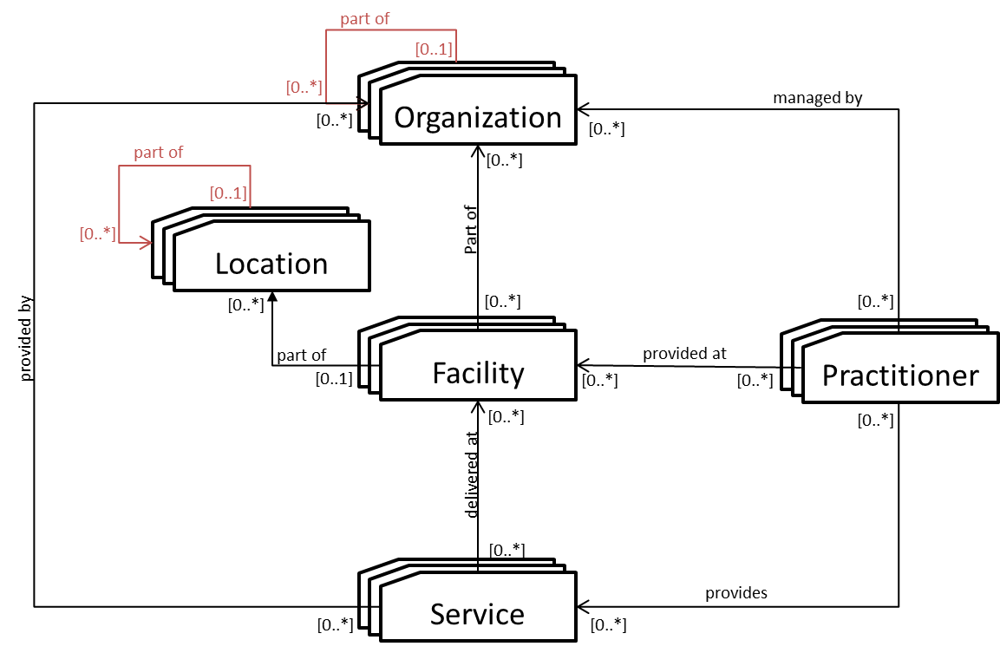

Mobile Care Services Discovery
0.2.0 - CI Build
Mobile Care Services Discovery
0.2.0 - CI Build
Mobile Care Services Discovery - Local Development build (v0.2.0). See the Directory of published versions
The Mobile Care Services Discovery (mCSD) Profile supports queries for organizations, locations, facilities, practitioners, and healthcare services. The relationship between these entities is illustrated in Figure 1:46.4.1-1.

Figure 1:46.4.1-1: Top-level Relationships between Care Services Entities
This profile enables tracking of changes to, searching for, and retrieval of, a set of resources. The creation, update, deletion and other maintenance activities of those resources is out of the scope of this profile.
The patient, Vera Brooks, consults with her physician who recommends surgery. The physician can assist the patient in finding a suitable surgeon, taking into consideration the location and specialty of the surgeon.
Vera Brooks sees her family physician, Dr. West, regarding a recent knee injury.
Dr. West diagnoses the problem as a torn ACL and decides to refer Vera to an orthopedic surgeon.
Dr. West uses her EMR query tool, which implements a Care Services Selective Consumer to search for orthopedic surgeons within 30km of Vera’s home.
The EMR retrieves the information from a Healthcare Worker Registry (HWR) and displays it to Dr. West.
Vera and Dr. West decide on an orthopedic surgeon; Dr. West prepares a referral.
The interactions between the various actors in this use case are shown in Figure 1:46.4.2.1.2-1.

Figure 1:46.4.2.1.2-1: Provider Query Use Case
The text in Figure 1:46.4.2.1.2-2 was used to generate the diagram in Figure 1:46.4.2.1.2-1. Readers will generally find the diagram more informative. The text is included here to facilitate editing.
@startuml
Vera -> Dr. West: My knee hurts
Dr. West -> Dr. West: diagnosis = torn ACL
Dr. West -> EMR (Care Services Selective Consumer): use EMR’s custom query tool \nsearch for orthopedic surgeons, \nwithin 30km of Vera’s home
EMR (Care Services Selective Consumer) -> HWR (Care Services Selective Supplier): Find Matching Care Services [ITI-90] request
HWR (Care Services Selective Supplier) -> EMR (Care Services Selective Consumer): Find Matching Care Services [ITI-90] response\ncontaining PractitionerRole list
EMR (Care Services Selective Consumer) -> EMR (Care Services Selective Consumer) : Resolve References
EMR (Care Services Selective Consumer) -> Dr. West : Review results\nwith office address, hours of operation
Dr. West -> Vera: Review and discuss options
Dr. West -> EMR (Care Services Selective Consumer): create Referral
@enduml
Figure 1:46.4.2.1.2-2: Provider Query Use Case Diagram Pseudocode
During an emergency event, medical volunteers may report to assist. At an emergency site, the mCSD service can be queried to quickly identify and grant permission to credentialed providers to enter the scene.
During Hurricane Katrina, health care volunteers were turned away from disaster sites because there was no means available to verify their credentials. During the Ebola outbreak in West Africa, it was unclear which health workers were available and had been trained in clinical care techniques.
Resources from jurisdictional areas can be reported up to a central location so there is a single point of access. This would make it easier for responders on location to verify the credentials of a reporting health worker.
A jurisdictional (state/district) Care Services Update Supplier will provide data to a central Care Services Update Consumer (National HIE).
The National HIE will be a Care Services Update Consumer grouped with a Care Services Selective Supplier.
An emergency responder (e.g., police on site controlling access) can use a Care Services Selective Consumer to validate the credentials of a reporting health worker from the central Care Services Update Supplier.
Based on the result, the emergency responder can allow or deny access to the reporting health worker.
The interactions between the various actors in this use case are shown in Figure 1:46.4.2.2.2-1.

Figure 1:46.4.2.2.2-1: Federated Data Site Management Workflow
The text in Figure 1:46.4.2.2.2-2 was used to generate the diagram in Figure 1:46.4.2.2.2-1. Readers will generally find the diagram more informative. The text is included here to facilitate editing.
@startuml
participant Health Worker
participant Emergency Responder\nCare Services Selective Consumer
participant National HIE\nCare Services Update Consumer\nCare Services Selective Supplier
participant State HIE\nCare Services Update Supplier
loop Regular update of practitioner information
National HIE\nCare Services Update Consumer\nCare Services Selective Supplier -> State HIE\nCare Services Update Supplier : Request Care Services Updates request [ITI-91]
State HIE\nCare Services Update Supplier -> National HIE\nCare Services Update Consumer\nCare Services Selective Supplier : Request Care Services Updates response [ITI-91]\nFHIR Bundle of Updated resources
end
Emergency Responder\nCare Services Selective Consumer -> National HIE\nCare Services Update Consumer\nCare Services Selective Supplier : Find Matching Care Services request [ITI-90]
National HIE\nCare Services Update Consumer\nCare Services Selective Supplier -> Emergency Responder\nCare Services Selective Consumer : Find Matching Care Services response [ITI-90]\nFHIR Bundle of matching resources
@enduml
Figure 1:46.4.2.2.2-2: Federated Data Site Management Workflow Diagram Pseudocode
Projects like the U.S. President’s Emergency Plan for AIDS Relief (PEPFAR)’s Data for Accountability, Transparency, and Impact (DATIM) need to have public health and service delivery indicators reported from a large number of sites (health facilities, communities, warehouses) within an Operating Unit (country/region). Within an Operating Unit, there are multiple, possibly overlapping, jurisdictions in operation which are managed by multiple organizations (e.g., ministries of health (MoH), faith-based organizations, international non-governmental organizations). The project needs to receive indicator submissions from pre-existing data systems hosted by these organizations. This data exchange requires a way to share site lists and implement identifier mapping between the sites in these lists.
Figure 1:46.4.2.3.1-1: Cross-Jurisdictional Data Exchange
An Operating Unit (OU) will run a Care Services Update Consumer and Care Services Update Supplier for a specific geographic area (e.g., country). This Update Consumer will query other organizations (ministries of health, partners) operating in the geographic area to get updated site data for the sites managed by the OU.
An OU Update Consumer will query a sub-unit Care Services Update Suppliers (e.g., MoH) to get an updated list of sites under the sub-unit.
An OU Update Consumer will query a subunit Care Services Update Suppliers (e.g., partner) to get an updated list of sites under the subunit.
The OU Update Consumer will use entity matching to determine if there are duplicated sites in the combined data and flag them for review. (See https://wiki.ohie.org/display/documents/OpenHIE+Entity+Matching+Service)
The interactions between the various actors in this use case are shown in Figure 1:46.4.2.3.2-1.
Figure 1:46.4.2.3.2-1: Cross-jurisdictional Site Management Workflow
The text in Figure 1:46.4.2.3.2-2 was used to generate the diagram in Figure 1:46.4.2.3.2-1. Readers will generally find the diagram more informative. The text is included here to facilitate editing.
@startuml
participant OU Reviewer
participant Operating Unit\nCare Services Update Consumer
participant MOH\nCare Services Update Supplier
participant Partner\nCare Services Update Supplier
Operating Unit\nCare Services Update Consumer->MOH\nCare Services Update Supplier: Request Care Services Updates [ITI-91] request
MOH\nCare Services Update Supplier->Operating Unit\nCare Services Update Consumer: Request Care Services Updates [ITI-91] response
Operating Unit\nCare Services Update Consumer->Partner\nCare Services Update Supplier: Request Care Services Updates [ITI-91] request
Partner\nCare Services Update Supplier->Operating Unit\nCare Services Update Consumer: Request Care Services Updates [ITI-91] response
Operating Unit\nCare Services Update Consumer->Operating Unit\nCare Services Update Consumer: Flag possible duplicates for review
OU Reviewer->Operating Unit\nCare Services Update Consumer: Look at flagged Locations
OU Reviewer->Operating Unit\nCare Services Update Consumer: Resolve flagged Locations
@enduml
Figure 1:46.4.2.3.2-2: Cross-jurisdictional Site Management Workflow Diagram Pseudocode
A developing country has decided to implement a Master Facility List (MFL) based on recommendations from the WHO in the MFL Resource Package (https://www.who.int/healthinfo/country_monitoring_evaluation/mfl/en/). This resource includes a minimum data set to uniquely identify, locate, and contact a specific facility. Since this will be a single source of information for the country, there may be differing hierarchies that need to be supported for the facilities. For example, one hierarchy would be the administrative hierarchy for the country (region, district, county). Another would be the supply chain hierarchy where hubs may be located separately from administrative regions. Yet another could be a reporting hierarchy used to send data to international organizations.
A Master Facility List (MFL) will run a Care Services Update Supplier and Care Services Selective Supplier for an entire country. A Human Resources Information System (HRIS) will run a Care Services Update Consumer to retrieve the list of facilities. A Logistics Management Information System (LMIS) will run a Care Services Update Consumer to retrieve the list of facilities.
An HRIS will query the MFL for an updated list of facilities where Practitioners can provide care.
An LMIS will query the MFL for an updated list of facilities for the supply chain to deliver health care supplies.
The MFL will return updated facilities to each of these systems with multiple hierarchies.
The interactions between the various actors in this use case are shown in Figure 1:46.4.2.4.1-1.

Figure 1:46.4.2.4.2-1: Master Facility List Workflow
The text in Figure 1:46.4.2.4.2-2 was used to generate the diagram in Figure 1:46.4.2.4.2-1. Readers will generally find the diagram more informative. The text is included here to facilitate editing.
@startuml
participant MFL\nCare Services Update Supplier
participant HRIS\nCare Services Update Consumer
participant LMIS\nCare Services Update Consumer
HRIS\nCare Services Update Consumer->MFL\nCare Services Update Supplier: Request Care Services Updates [ITI-91] request
MFL\nCare Services Update Supplier->HRIS\nCare Services Update Consumer: Request Care Services Updates [ITI-91] response
LMIS\nCare Services Update Consumer->MFL\nCare Services Update Supplier: Request Care Services Updates [ITI-91] request
MFL\nCare Services Update Supplier->LMIS\nCare Services Update Consumer: Request Care Services Updates [ITI-91] response
@enduml
Figure 1:46.4.2.4.2-2: Master Facility List Workflow Diagram Pseudocode
IG © 2019+ IHE International - ITI domain Group. Package ihe.mcsd.fhir#0.2.0 based on FHIR 4.0.1. Generated 2021-05-28
Links: Table of Contents |
QA Report
Version History |
 |
Propose a change
|
Propose a change